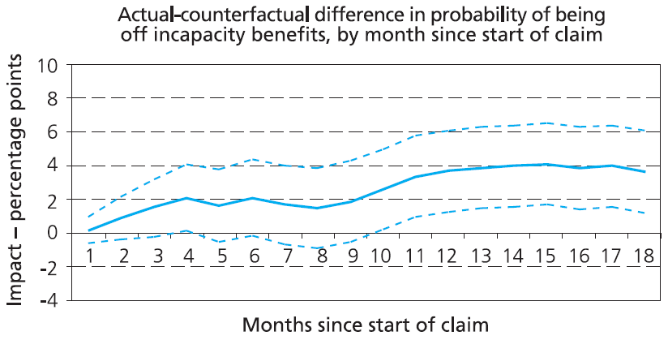
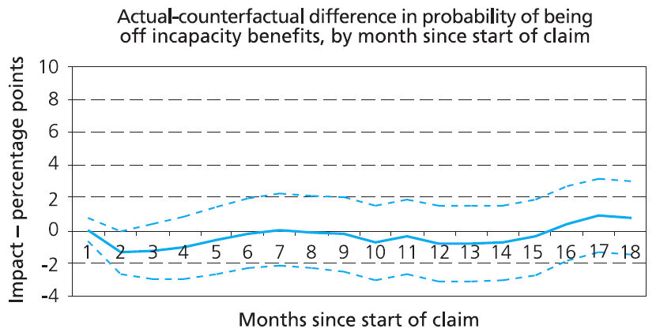
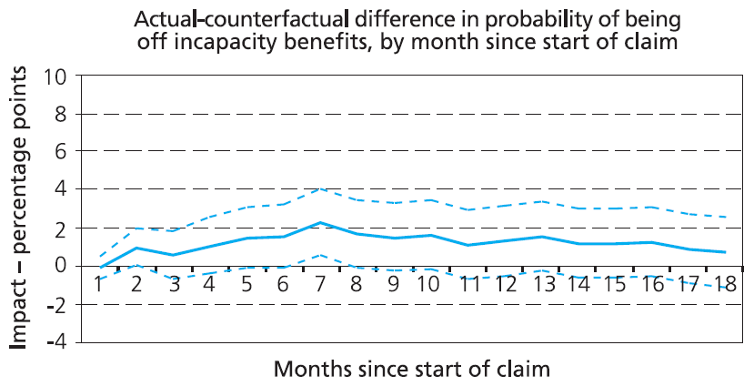
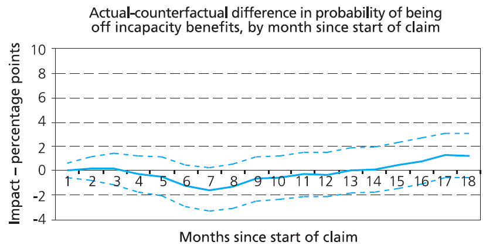
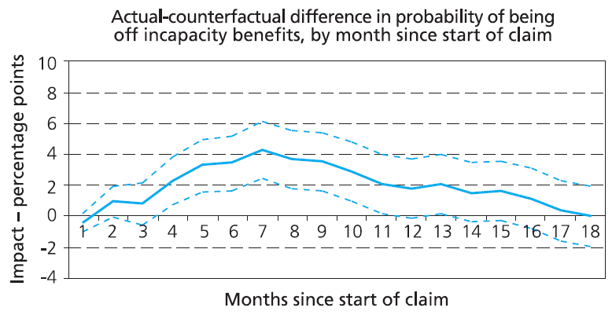
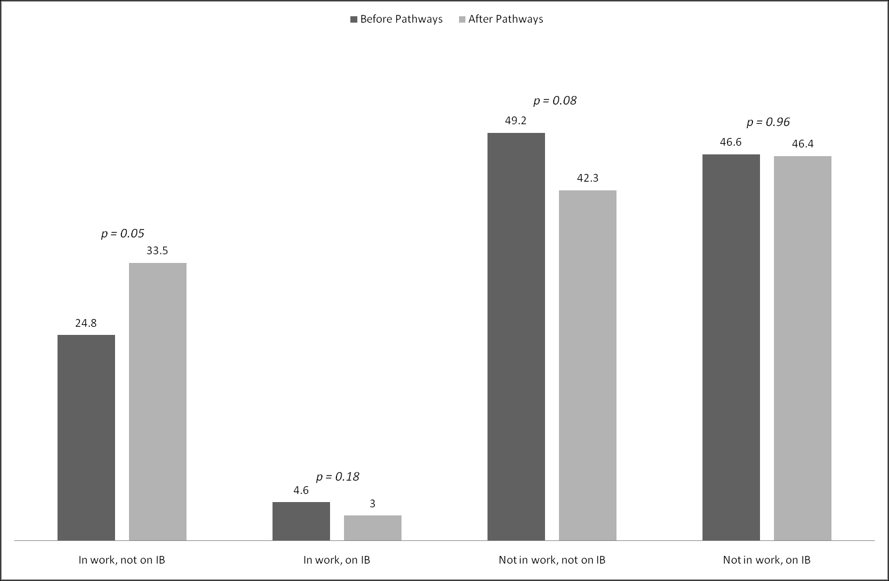
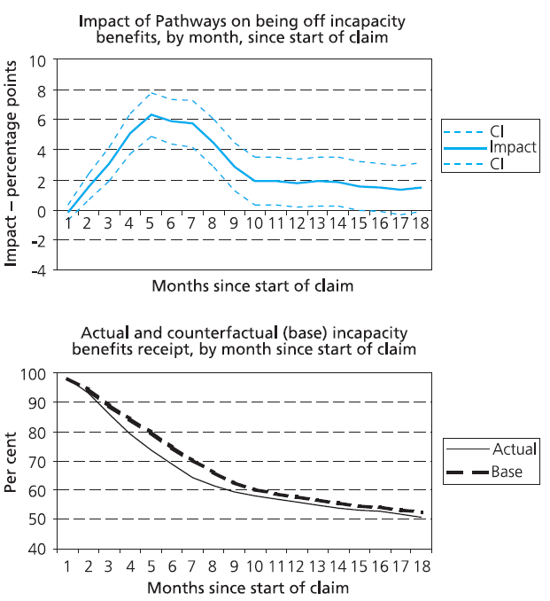

Chapter 11: Pathways to Work: Secondary Analysis of Later Quantitative Evidence of Programme Effectiveness
Source: Pages 241–254 of MintonThesis.pdf (September 2009). Text extracted from PDF; figures extracted directly as images.
11.1 Introduction
In the previous chapter, I considered some early statistics produced by the Department for Work and Pensions that appear to indicate the substantive effectiveness of Pathways to Work. My analysis suggested that the substantive effects of the intervention may be much less than commonly-replicated graphical presentations infer. I concluded the section by considering ‘accidentally released’ evidence suggesting that the longer-term effects of the programme are significantly less than the shorter-term effects.
This chapter begins by considering the longer-term – one-year and over – effects of the programme, both on employment and benefit outcomes, for new benefit claimants. This longer term impact can be assessed fairly thoroughly, rather than simply guessed at based upon anecdotal reports and incidentally ‘leaked’ metrics like the 12 month version of The Graph, because they are the subject of a 2007 DWP-commissioned report produced by the Policy Studies Institute, called ‘The Impact of Pathways to Work’.1 The results of this report will be the focus of our analysis within this section.
I will proceed as follows: firstly, I will describe and discuss the methodological approach adopted for treatment effect estimation within the PSI report, known as Differences-in-Differences (DiD). Then I will consider the assumptions both implicitly and explicitly made when one adopts this approach, and thus reasons for caution against accepting the results at face value; and then I will conclude this discussion by considering the prevalence of ‘false positives’ described within the PSI report.
Having provided a set of reasons to be cautious about the treatment effect estimates produced within the PSI reports, the rest of the section will proceed under the assumption that the results are valid. As with the previous chapter, we will consider the substantive implications that follow from assuming the treatment estimates as true. I will consider the possible interpretations of a characteristic ‘humped’ shape within many of the longer-term treatment effect estimates produced within the analysis. I will then attempt to identify NNT estimates, both for the samples as a whole, and for various sub-groups.
11.2 The Policy Studies Report: Methodology
The PSI report uses an approach known as Differences-in-Differences (commonly abbreviated DiD) to attempt to produce estimates of the treatment effect. The report provides a pedagogic example of the approach2 but not a formal definition. An earlier report by the Institute for Fiscal Studies (IFS), however, uses the approach and provides the following, more precise, definition of it:
Where Yit denotes the outcome of interest (for example employment outcomes) for individual i and Xi denotes observed individual characteristics. Pi is a dummy variable indicating whether the individual’s enquiry about claiming incapacity benefits was made in a Pathways to Work pilot area or in one of the comparison areas, and Tt is a dummy variable indicating whether the enquiry about claiming incapacity benefits was made before or after the Pathways to Work pilots were actually implemented (regardless of whether the individual lived in one of the seven pilot areas or in one of the comparison areas). epsilonit is an error term.
The term of particular interest is Pi . Tt which is a dummy variable taking the value 1 for those observed in one of the seven Pathways to Work pilot areas after the policy was introduced, and 0 otherwise. Hence, delta is the main coefficient of interest. This measures the effect of being subject to the Pathways to Work pilot in a period in which the policy was in effect, controlling for all other observed factors. In addition it is net of any effect of being observed in the period after the policy was implemented that is constant across pilot and comparison areas (gamma) and any effect of being in a pilot area that is constant over time (beta).3
Notice, therefore, that the Differences-in-Differences approach is a fairly simple extension of the multivariate linear regression approach described on page 210. As such, estimates based upon the approach are contingent for their validity on a range of assumptions. As the IFS description goes on to state:
[DiD] captures shifts in the outcome measure among those in the Pathways to Work pilot areas vis-a-vis those in the comparison areas that occur after the policy is introduced. However, this can be interpreted as the causal impact of the intervention only under two assumptions: first … that the effect of unobserved characteristics on the outcomes of interest does not vary differentially between pilot and comparison areas over time; second, that the characteristics included in our regressions that are correlated with Pi . Tt have a linear effect on the outcomes of interest as assumed in [the equation above].4
The PSI report also indicates that the validity of the DiD estimates is dependent upon two assumptions, which it phrases as follows:
- [That] the composition of the pilot and comparison area samples before and after the introduction of Pathways should remain unchanged with regard to those unobserved characteristics that may affect outcomes.5
- [That] those unobserved characteristics that change over time and affect outcomes do so equally for the pilot and comparison areas.6
In order to test for conditions that cast this second assumption into doubt, and based on an approach outlined within a highly cited econometrics paper,7 the report conducts what it calls ‘pre-programme tests’:
Such tests are carried out using DiD to estimate the effect of a hypothetical – that is, non-existent – intervention taking place between two periods of time, both of which pre-date the introduction of Pathways. If these effects are found to be significant, it suggests that, in the past, it has not been possible using the DiD approach to achieve reliable estimates of the counterfactual.8
To rephrase the above slightly: pre-programme tests show whether the DiD approach detects a statistically significant treatment effect even when there is no treatment; otherwise known as a ‘false positive’.
For both Phase One (real treatment start date October 2003) and Phase Two (real treatment start date April 2004) regions, the pre-programme tests were conducted by changing the Tt variable to falsely indicate that the programme began either one or two years before its actual start date. This produced the estimates reproduced as Figure 1, Figure 2, Figure 3, and Figure 4 below.

Source & title: Figure 4.2 of Bewley, Dorsett & Haile (2007), ‘The Impact of Pathways to Work’

Source & title: Figure 4.3 of Bewley, Dorsett & Haile (2007), ‘The Impact of Pathways to Work’

Source & title: Figure 4.4 of Bewley, Dorsett & Haile (2007), ‘The Impact of Pathways to Work’

Source & title: Figure 4.5 of Bewley, Dorsett & Haile (2007), ‘The Impact of Pathways to Work’
So, in one of the two tests for the Phase One regions, shown in Figure 1, the DiD approach indicates a statistically significant and steadily rising treatment effect on the probability of leaving IB, even though there is no real treatment. It also indicates a statistically significant effect for the seventh month following a claim in one of the tests for the Phase Two regions (Figure 3), although this false positive is not as persistent and systematic as that indicated in Figure 1.
The PSI report reacts to the false positive indicated in Figure 1 by concluding that results from Phase One regions are not as reliable as those from Phase Two regions; the majority of the estimates produced within the rest of the report are thus based upon Phase Two rather than Phase One regions. The methodology section of the report also adds the following:
While the results for the April 2004 areas are more encouraging than those for the October 2003 areas, it should be noted that the results for the period one year before the introduction of Pathways – that is, the results that revealed a problem for the October 2003 areas – differ across the two phases of Pathways rollout in that the October 2003 test results apply to a cohort of individuals commencing a claim just before Pathways was introduced while the April 2003 results apply to a cohort of individuals some months before Pathways was introduced locally. One possible explanation for this difference may be that individuals starting a claim shortly before the introduction of Pathways are affected by Pathways in some way. For the purpose of comparability, it is useful to carry out an additional pre-programme test to see if those individuals in the April 2004 areas who started a claim just before the introduction of Pathways appear to have been affected by Pathways. The DiD test in this case is based on a cohort of individuals starting a claim between 1 January and 4 April 2004 and a cohort starting a claim in a similar period one year earlier. The results […] show that in this case statistically significant effects are found between months 4 and 11. Beyond this point, effects are statistically insignificant.9
These results, based upon a more consistent comparison of Phase One and Phase Two regions, are shown in Figure 5. The ‘possible explanation’ suggested in the above quotation is compatible with the ‘anticipatory treatment effect’ theory discussed in the previous chapter, with respect to the Phase Two regions, although this theory does not appear to be explicitly countenanced within any commissioned publications evaluating Pathways.

Source and title: Figure 4.6 of Bewley, Dorsett & Haile (2007), ‘The Impact of Pathways to Work’
More broadly, the above raise concerns about the fundamental reliability of the DiD estimates. Two out of the five pre-programme tests (Figure 1 and Figure 5) produce false positives for a large proportion of the months post (hypothetical) treatment. One further pre-programme test (Figure 3) revealed a statistically significant false positive for one month. Additionally, for either region, there appears to be no consistency between the results of the one- and two-year versions of the pre-programme tests.
Given this, one should treat the estimates that follow with caution; absence of evidence of false positives in two (out of three) pre-tests for Phase Two regions is not evidence of absence of the kinds of ‘biases’ that invalidate the assumptions that must hold for DiD impact assessments to be ‘true’. As discussed in the previous chapter, ‘the evaluation problem’ may well be fundamentally intractable, and thus not amenable to technical fixes, irrespective of their level of statistical sophistication.
11.3 Reported Impact Estimates
Figure 6 presents a graphical representation of table 5.5 of the report, showing the estimated impact of Pathways to Work on four mutually exclusive outcome states10 of a sample of new claimants interviewed, on average, around 19 months after starting to claim IB.11

Source: derived from table 5.5 of Bewley, Dorsett & Haile (2007), ‘The Impact of Pathways to Work’
According to these estimates, the longer-term impact of Pathways to Work is to (statistically and substantially) increase the proportion of new IB claimants who, within about one-and-a-half to two years, stop claiming IB and are in employment. However, it has no noticeable longer term impact on the proportion of new claimants still claiming IB.
Both of these findings may appear paradoxical, and to contradict the results published by the DWP previously. This apparent paradox can be resolved, however, by considering figure 5.2 of the report, reproduced as Figure 7 below.

Source and title: Figure 5.2 of Bewley, Dorsett & Haile (2007), ‘The Impact of Pathways to Work’
These estimates, based on the same administrative data source as that used to produce both the six-month and twelve-month version of The Graph, the National Benefits Database, indicate that most of the positive effect on IB off-flow rates is short term, reaching a peak of around 6 percentage points within the first six months following the start of the claim, before falling over the next six or so months, to reach a sustained long term level of around 2 percentage points. The peak of the effect, therefore, is over the six-month period illustrated within The Graph. In selecting this particular metric, the DWP were thus presenting Pathways at the peak of its effectiveness.
The ‘humped’ shape may also help to explain the apparent effectiveness of Pathways in increasing employment rates. This information is summarised in table 5.4 of the PSI report, reproduced, together with two additional columns of derived values, as Table 1 below.
| Probability of receiving IB… | Impact estimate | P-value | Base | Sample size | NNT estimate | Ratio |
|---|---|---|---|---|---|---|
| 1–6 months | -6.2 | 0 | 73.2 | 54,837 | 16 | |
| 7–12 months | -2.1 | 1 | 54.5 | 54,837 | 48 | 3.0 |
| 13–18 months | -1.1 | 17 | 49.2 | 54,837 | 91 | 5.6 |
Source & title: Table 5.4 of Bewley, Dorsett & Haile (2007), ‘The Impact of Pathways to Work’, London: TSO
The two additional columns show the Number Needed to Treat estimates that follow from the impact estimates (the reciprocal of the modulus of the ‘Impact estimate’ value); and the Ratio of the estimated shorter-term (1–6 months) to longer term programme effectiveness. These estimates suggest that, though within six months one would expect to have to treat 16 new claimants to Pathways to see one additional person leave IB as a result of it,12 over the following six months this number increases to 48 claimants, and over the next six months to 91 claimants. Furthermore, the p-value for this last estimate (17%) exceeds the bounds of conventional statistical significance, and could be interpreted as suggesting there is approximately a one-in-five chance that the ‘real’ NNT for this time period is infinite (i.e. that the ‘real’ impact over this time period is nil).
The ratio may be interpreted in a number of ways. Different interpretations thus depend upon why one believes the gap between Pathways and non-Pathways off-flow rates is closing.
A fairly benign explanation for the closing gap focuses on comparatively large increase in off-flow rates within the first six months, and attributes this to ways in which Pathways has improved and made more efficient the IB claims process at Jobcentre Plus offices. As the summary of the PSI report states:
One potential explanation [for the impact estimate pattern] may be that most exits are the result of the WFIs which generally take place within the early months of a claim. It is also perhaps consistent with the structure of Pathways that exits from incapacity benefit should be concentrated in the first six months or so after the claim starting, if the accelerated PCA results in those disallowances from incapacity benefits occurring earlier.13
A somewhat less benign explanation for the closing gap is based upon a more intuitive reading of the top sub-figure of Figure 7, and of the ratio. This explanation is that many of the additional claimants who leave IB in the first six months following a claim, as a result of the Pathways intervention, leave the benefit prematurely and inappropriately, and subsequently return to IB in later months. I will refer to this pattern of short-term exit, followed by a longer-term return to IB, as a ‘false exit’.
There are, in turn, at least two possible explanations for this kind of false exit: one explanation, which I will refer to as the Procedural Explanation (or alternatively the ‘Push Explanation’), is that something about the organisational structure and process of Pathways causes more claimants to be inappropriately made to leave IB during these early months. A second explanation, which I will refer to as the Motivational Explanation (or alternatively the ‘Pull Explanation’), is that Pathways to Work causes more claimants to want to leave IB within the first few months following the claim, presumably with the intention of finding or beginning employment, but then return to IB in later months after finding themselves unable to cope with the labour market. An intuitive (though speculative) interpretation of the ratios above, that follows from the Motivational Explanation, is that, for every six persons who leave IB within six months of their initial claim due to Pathways, about three will return to IB within the next six months, and another two more will return within the six months thereafter.
I contacted Richard Dorsett, co-author of the PSI report, to enquire as to whether the Motivational Explanation appeared ‘fair and reasonable’. Dorsett responded as follows:
There could be a number of explanations for such a hump and what you suggest is one possibility. An alternative interpretation is that individuals exit IB more quickly in Pathways areas due to the accelerated PCA process but later return. Whether your interpretation is relatively fair and reasonable is a more demanding question. [Personal communication, 18 September 2007]
i.e. with a version of the Procedural Explanation. This brief response acknowledges that there may be a high rate of returns to IB from new claimants who leave the benefit within six months as a result of the intervention; and so the intervention may be causing the PCA process to operate with reduced accuracy (in the sense that someone who is disallowed within the accelerated PCA process but then returns probably should not have been disallowed in the first place) as well as greater speed.
11.4 The Motivational Explanation and Employment Outcomes
If one is ready to contingently accept the Motivational Explanation for the estimated claimant off-flow impact pattern, then an explanation for the apparent success of the intervention regarding employment outcomes follows fairly readily: this is that, for every one person who successfully finds suitable, long-term employment as a result of Pathways, a number of other persons (perhaps between three and six) had attempted to cope within the labour market but were unable to (for example, by finding themselves unable to cope within a job that had been identified as suitable for them).
The substantive implications that follow if one accepts this kind of explanation are as follows: Pathways means that the more job-ready IB claimants are more likely to enter employment; but Pathways doesn’t seem to make more of the claimants job-ready. Pathways increases the chances of ‘job-readiness’ leading to employment by encouraging more people who are both job-ready and not job-ready to try employment.
Considering the sieve metaphor used earlier, if tougher labour market conditions are analogous to shaking the sieve more vigorously, increasing the numbers of grains (people) who fall through the holes, then Pathways is analogous to someone taking a number of the recently fallen grains and throwing them upwards, back into the sieve from below. Although some proportion of those thrown will make this reverse transition, gravity (demography) is working against them, and so the majority of those thrown up into the labour market will then fall back down into economic inactivity.
11.5 Concluding Remarks
One of the most interesting aspects of the government-commissioned PSI report is the manner in which these largely negative findings are interpreted and presented. In the conclusion to the report, for example, the following statement is made:
Overall, the results in this report are encouraging. They show that the positive employment effects detected in Adam et al (2006) for a cohort of individuals making an enquiry about incapacity benefits shortly after Pathways was introduced can be found also in a later cohort making their initial enquiry some time after Pathways was introduced. This provides some reassurance that the original positive estimated effects were genuine. Furthermore, the results in this report provide the first indication that the effects may be sustained in the medium term since the positive employment effects relate to a period of time about a year and a half after they initially got in touch with the contact centre to enquire about claiming incapacity benefits.14
Similarly, the first point made in the list of findings within the Summary states that: “Pathways significantly increased the probability of being employed about a year and a half after the initial enquiry by 7.4 percentage points.”15 The report concludes the list of summary results by stating: “Overall, the results are encouraging in that they suggest Pathways continues to have a positive impact on employment and, furthermore, that this impact may be sustained.”16
The following two points in the list of summary findings are as follows:
The small sample size of those in work and with earnings information at the time of the outcome interview reduced the likelihood of detecting an impact on earnings. No statistically significant impact of Pathways on monthly net earnings about a year and a half after the initial incapacity benefits enquiry was found […]. It is not possible with the survey data to observe earnings between the time of the initial enquiry and the outcome interview; it is possible that there may have been an earnings effect during this period. In view of the employment effect of Pathways, one would expect a positive impact on earnings.
The effect of Pathways in incapacity benefits receipt about a year and a half after the initial incapacity benefits enquiry was small and not statistically significant […]. Estimates based on administrative data were of a reduction of 1.5 percentage points in the probability of claiming incapacity benefits a year and a half after the start of the claim […]. Using administrative data, it was possible to look at the effect on incapacity benefits for each month following start of claim. This showed that Pathways reduced incapacity benefits receipt by a maximum of 6.3 percentage points five months after the start of claim (from a base of 80 per cent). The seemingly stable long-term effect of 1.5 to two percentage points was reached in month ten.17
The findings regarding the long-term ineffectiveness of Pathways with respect to benefits receipt are thus ‘buried’ in the third of three increasingly dense paragraphs of summary findings, prefaced by a paragraph inferring that statistically insignificant findings are more likely to be the result of inadequate sample size than inadequate effect size. The first sentence of the third paragraph begins by stating the statistical insignificance of the findings. The next two sentences begin with the words “Estimates based on administrative data” and “Using administrative data” respectively, which could be interpreted as suggesting that the ‘statistically insignificant’ findings mentioned in the first sentence refer only to survey sample estimates, and are an artefact of small sample size (which is not the case). The last two sentences in the paragraph begin by stating the maximum recorded level of effectiveness, then conclude by referring to the eventual effects with the psychologically positive adjectives ‘long-term’ and ‘stable’.
Footnotes
Bewley, H., R. Dorsett and G. Haile (2007). The Impact of Pathways to Work. DWP. London, Corporate Document Services.↩︎
Ibid., pp. 33–35↩︎
Adam, S., C. Emmerson, C. Frayne and A. Goodman (2006). Early quantitative evidence on the impact of the Pathways to Work pilots. DWP, Corporate Document Services., p. 26↩︎
Ibid., pp. 26–7↩︎
Bewley, H., R. Dorsett and G. Haile (2007). The Impact of Pathways to Work. DWP. London, Corporate Document Services., p. 36↩︎
Ibid., p. 36↩︎
Heckman, J. J. and V. J. Hotz (1989). “Choosing Among Alternative Nonexperimental Methods for Estimating the Impact of Social Programs: The Case of Manpower Training.” Journal of the American Statistical Association 84(408): 862–874.↩︎
Bewley, H., R. Dorsett and G. Haile (2007). The Impact of Pathways to Work. DWP. London, Corporate Document Services., p. 36↩︎
Ibid., emphasis added↩︎
Not in work and not claiming IB; not in work and claiming IB; in work and claiming IB; and in work and not claiming IB.↩︎
Bewley, H., R. Dorsett and G. Haile (2007). The Impact of Pathways to Work. DWP. London, Corporate Document Services., p. 17↩︎
This is within the range of NNT estimates based on visual inspection of different versions of The Graph, of between 9 and 23, shown in Table 10.2.↩︎
Bewley, H., R. Dorsett and G. Haile (2007). The Impact of Pathways to Work. DWP. London, Corporate Document Services., p. 4↩︎
Ibid., p. 83, emphasis added↩︎
Ibid., p. 2↩︎
Ibid., p. 4↩︎
Ibid. p. 2, emphasis added↩︎